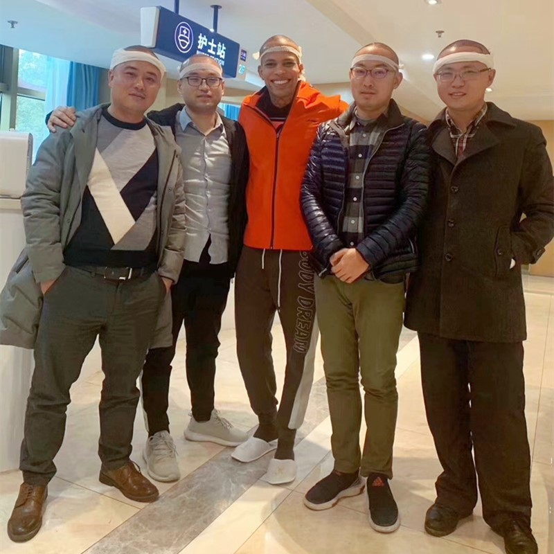
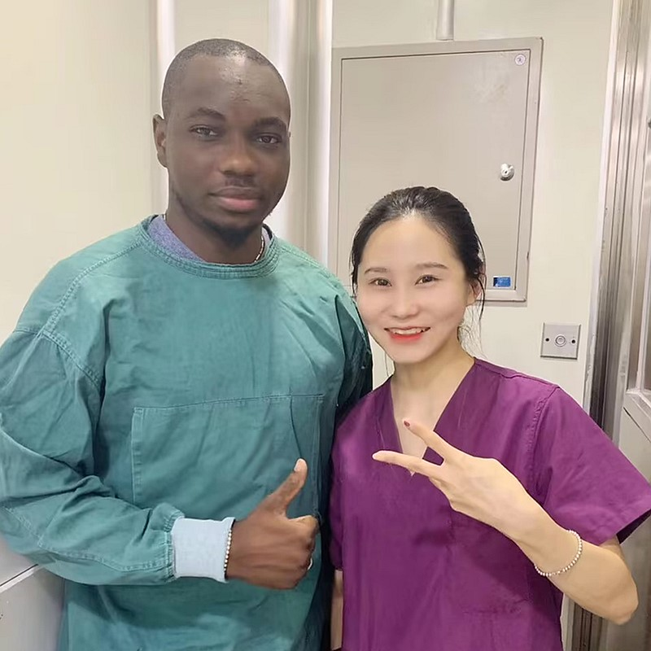

了解您的脫髮狀況並找到最適合的解決方案

50歲男性中約有50%面臨脫髮問題，到70歲時更可能高達80%。好消息是，透過早期介入和妥善治療，您可以有效管理甚至改善脫髮狀況。這份完整指南將幫助您了解不同類型的脫髮、其成因，最重要的是，您該採取什麼對策。
辨識您正在經歷的脫髮類型
評估您的禿髮嚴重程度
了解您為何會掉頭髮
每個階段的實用解決方案
採取這些步驟來解決您的脫髮問題
使用諾伍德分級表辨識您的脫髮階段
獲取專家評估與診斷
若適合，立即開始藥物治療
如有需要，探索外科手術選項
監控進度並適時調整方案
持續治療以維持豐盈秀髮
為什麼我們的完整男性脫髮療程能帶來卓越且持久的效果
我們拒絕一刀切的方。根據您的諾伍德分級、年齡、目標和供髮區狀況，為您量身打造個人化治療藍圖，可能包括預防、藥物治療和/或手術選項。
早期階段？以預防為主。晚期階段？策略性植髮。我們根據您的具體階段匹配最適合的治療，避免不必要的手術或浪費時間。
我們不僅着眼於現在，更為您的未來做規劃。我們的療程包括持續維護策略、供髮區管理和備援方案，確保數十年持久效果。
業界領導者，成效有目共睹
自2006年起，微針植髮技術的先驅和領導者
遍布全國各大城市，均維持同一高標準
創新的微針和植髮筆技術，帶來卓越效果
受到全球患者信賴，帶來改變人生的效果
全程英語支援，為國際患者提供完善的治療體驗
最先進的設備和嚴格的安全規範，讓您安心無憂
看看我們的患者達成的驚人改變


記錄我們滿意患者的珍貴時刻

指南幫助做出正確選擇

做出明智的選擇

完美的治療方案

感覺更好了

指南幫助我做決定

治療效果極佳

外貌大幅改善
對結果非常滿意
聽聽來自全球滿意患者的分享
在Google搜尋雄性禿治療找到大麥男性脫髮指南！醫師幫我分析M型禿改善方案，現在我的髮際線明顯回來了！
遺傳性脫髮困擾我很久了！在Bing查到大麥的男性掉髮原因分析，雄性禿治療很成功，頭髮濃密度恢復了！
M型禿改善效果超好！大麥的男性脫髮指南讓我了解脫髮原因，雄性禿治療讓我重拾自信，超推薦！
遺傳性脫髮終於有解了！大麥的男性掉髮原因分析很詳細，雄性禿治療效果讓我非常滿意！
在Google查到雄性禿治療和大麥男性脫髮指南，M型禿改善超明顯！醫師的專業讓我放心，現在頭髮長回來了！
大麥的男性掉髮原因指南太有用了！遺傳性脫髮終於得到有效治療，M型禿改善明顯，雄性禿治療推薦！
體驗我們現代化且舒適的設施

我們最先進的設施

在我們的高級休息區放鬆等候

無菌且先進的設備

私密且專業

舒適的術後恢復空間

溫馨的入口大堂
解答有關植髮的常見疑問
聯絡我們獲取免費諮詢
15810155700
+86 13730143529
hairtransplant@qq.com